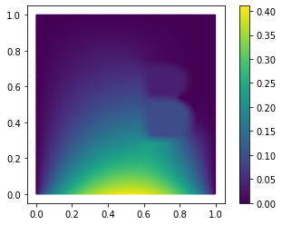
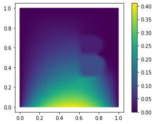

Tutorial: Using pyMOR’s discretization toolkit¶
Run this tutorial
Click here to run this tutorial on mybinder.org:pyMOR’s discretization toolkit allows to quickly build parameterized full-order models based on the NumPy/SciPy software stack. Currently supported are stationary or instationary scalar PDEs of up to second order with possibly nonlinear advection or reaction terms in one or two spatial dimensions. Unstructured meshes can be imported in the Gmsh file format.
In this tutorial we will focus on elliptic equations of the form
on the domain \(\Omega:= (0, 1)^2 \subset \mathbb{R}^2\) with data functions \(f(\cdot, \mu) \in L^2(\Omega)\), \(\sigma(\cdot, \mu) \in L^\infty(\Omega)\).
A first equation without parameters¶
First, let us assume that the source \(f(x, \mu)\) is an indicator function of a circular disk with radius \(0.3\) and that \(\sigma(x, \mu)\) is constant:
We start by importing commonly used pyMOR classes and methods from the
basic module:
from pymor.basic import *
To specify the problem at hand using pyMOR’s discretization toolkit, we
first need to specify the computational domain \(\Omega\). Multiple
classes are available to define such domains in the
domaindescriptions module,
which all derive from the DomainDescription interface class.
In our case, we can use a RectDomain:
domain = RectDomain([[0.,0.], [1.,1.]])
Data functions are defined using classes which derive from
the Function interface. We specify the constant diffusivity \(\sigma\)
using a ConstantFunction:
diffusion = ConstantFunction(1, 2)
Here, the first argument is the function’s constant value. The second argument is the spatial dimension of the domain the problem is defined on.
For the definition of the source term \(f\) we use an
ExpressionFunction which is given an arbitrary Python expression
used to evaluate the function. In this expression, the coordinates at
which the function shall be evaluated are given as the variable x.
Many NumPy functions can be used directly. The entire NumPy module is
available under the name np.
Thus, to define \(f\) we could write
(sqrt((x[0]-0.5)**2 + (x[1]-0.5)**2) <= 0.3) * 1.
However, pyMOR Functions are required to be vectorized with respect
to the coordinate x. In the case of ExpressionFunction this
means that x can be an arbitrary dimensional NumPy array of
coordinates where the last array index specifies the spacial dimension.
Therefore, the correct definition of \(f\) is:
rhs = ExpressionFunction('(sqrt( (x[...,0]-0.5)**2 + (x[...,1]-0.5)**2) <= 0.3) * 1.', 2, ())
Similarly to ConstantFunction, the second argument is the dimension
of the computational domain. As the shape of the return value cannot be
easily inferred from the given string expression, it has to be provided
as a third argument to ConstantFunction. For scalar functions we
provide the empty tuple (), for functions returning
three-dimensional vectors we would specify (3,), and for functions
returning \(2\times 2\) matrices we would specify (2,2).
Finally, the computational domain and all data functions are collected
in a StationaryProblem:
problem = StationaryProblem(
domain=domain,
diffusion=diffusion,
rhs=rhs,
)
This problem definition can now be handed over to discretization methods
(see pymor.discretizers.builtin) which assemble corresponding
discrete full-order models. For finite elements, we use
discretize_stationary_cg,
which receives the maximum mesh element diameter via the diameter
argument:
m, data = discretize_stationary_cg(problem, diameter=1/4)
The resulting Model can be solved,
returning a VectorArray with the solution data:
U = m.solve()
Finally, we visualize the solution:
m.visualize(U)
In case a specific grid type shall be used (RectGrid or
TriaGrid), the corresponding class has to be passed to the
discretizer as the grid_type argument. By using RectGrid we get
bilinear finite elements:
m, data = discretize_stationary_cg(problem, diameter=1/4, grid_type=RectGrid)
m.visualize(m.solve())
We get a finite volume model using
discretize_stationary_fv:
m, data = discretize_stationary_fv(problem, diameter=1/4, grid_type=TriaGrid)
m.visualize(m.solve())

Defining boundary conditions¶
As the vigilant reader will already have noticed, we did not specify any boundary conditions when defining and solving our problem. When no boundary conditions are specified, pyMOR’s discretization toolkit will assume that homogeneous Dirichlet conditions are implied over the entire boundary of \(\Omega\).
As the next example, let us now assume that the data functions are given by
and that we have the following mixed boundary conditions
with \(g_N(x) \equiv -1\).
Before solving this problem, let us first silence pyMOR’s verbose log
messages for the rest of this tutorial using the set_log_levels
method:
set_log_levels({'pymor': 'WARN'})
To impose the correct boundary conditions we need to declare which type of boundary condition should be active on which part of \(\partial\Omega\) when defining the computational domain:
domain = RectDomain(bottom='neumann')
Then all we need is to pass the Neumann data function \(g_N\) to the
StationaryProblem. Here, we can use again a ConstantFunction.
The diffusivity can be defined similarly as above:
neumann_data = ConstantFunction(-1., 2)
diffusion = ExpressionFunction('1. - (sqrt( (x[...,0]-0.5)**2 + (x[...,1]-0.5)**2) <= 0.3) * 0.999' , 2, ())
problem = StationaryProblem(
domain=domain,
diffusion=diffusion,
neumann_data=neumann_data
)
Finally, we discretize and solve:
m, data = discretize_stationary_cg(problem, diameter=1/32)
m.visualize(m.solve())

Another example¶
Even with a single ExpressionFunction we can build many different examples.
For instance, to let \(\sigma\) be given by a periodic pattern of
\(K\times K\) circular disks of radius \(0.3/K\) we can use the
following definition:
diffusion = ExpressionFunction(
'1. - (sqrt( (np.mod(x[...,0],1./K)-0.5/K)**2 + (np.mod(x[...,1],1./K)-0.5/K)**2) <= 0.3/K) * 0.999',
2, (),
values={'K': 10}
)
Here, we have used the values parameter of ExpressionFunction to
make K available as an additional constant in the defining
expression. In particular, we can easily change K programatically
without having to resort to string manipulations. The solution looks
like this:
problem = StationaryProblem(
domain=domain,
diffusion=diffusion,
neumann_data=neumann_data
)
m, data = discretize_stationary_cg(problem, diameter=1/100)
m.visualize(m.solve())

Data functions defined from pixel graphics¶
BitmapFunction uses the Python Imaging Library (PIL) to read gray
scale images in various image file formats. The resulting
two-dimensional NumPy array of pixel values defines a piecewise constant
data function on a rectangular domain, where the range of the function
(from black to white) is specified via the range parameter. For
instance, when using a BitmapFunction for \(\sigma\) with the
following graphic stored in RB.png:

and a range of [0.001 1] we obtain:
diffusion = BitmapFunction('RB.png', range=[0.001, 1])
problem = StationaryProblem(
domain=domain,
diffusion=diffusion,
neumann_data=neumann_data
)
m, data = discretize_stationary_cg(problem, diameter=1/100)
m.visualize(m.solve())

The displayed warning results from the fact that the used image file has an additional channel of transparency values (alpha channel) and can be ignored.
A parametric problem¶
Now, let us consider the Neumann data function:
with a single Parameter \(\mu_{neum} \in \mathbb{R}\).
In pyMOR, parameter values are specified as a dictionary of one-dimensional
NumPy arrays. Each value in the dictionary must have a correct size specified by the
Parameters of the ParametricObject. In this example we have a single scalar
valued parameter which we call 'neum'. Thus, the Parameters of the function
will be
{'neum': 1}
We can then make the following definition of the Neumann data:
neumann_data = ExpressionFunction('-cos(pi*x[...,0])**2*neum[0]', 2, (), parameters= {'neum': 1})
Similar to the range of the function, pyMOR cannot infer from the given
string expression the parameters used in the expression, so these
Parameters have to be provided as the parameters argument.
The individual parameters are then available as variables in
the expression.
We can then proceed as usual and automatically obtain a parametric
Model:
diffusion = ExpressionFunction(
'1. - (sqrt( (np.mod(x[...,0],1./K)-0.5/K)**2 + (np.mod(x[...,1],1./K)-0.5/K)**2) <= 0.3/K) * 0.999',
2, (),
values={'K': 10}
)
problem = StationaryProblem(
domain=domain,
diffusion=diffusion,
neumann_data=neumann_data
)
m, data = discretize_stationary_cg(problem, diameter=1/100)
m.parameters
Parameters({neum: 1})
When solving the model, we now need to specify appropriate
parameter values:
m.visualize(m.solve({'neum': [1.]}))

For the solve method, the
parameter value can also be specified as a single number:
m.visualize(m.solve(-100))

Multiple parameters¶
Next we also want to parameterize the diffusivity in the \(K \times K\) circular disks by a scalar factor \(\mu_{diffu}\). To this end we define:
diffusion = ExpressionFunction(
'1. - (sqrt( (np.mod(x[...,0],1./K)-0.5/K)**2 + (np.mod(x[...,1],1./K)-0.5/K)**2) <= 0.3/K) * (1 - diffu[0])',
2, (),
values={'K': 10},
parameters= {'diffu': 1}
)
We proceed as usual:
problem = StationaryProblem(
domain=domain,
diffusion=diffusion,
neumann_data=neumann_data
)
m, data = discretize_stationary_cg(problem, diameter=1/100)
m.parameters
Parameters({diffu: 1, neum: 1})
As we can see, pyMOR automatically derives that in this case the model
depends on two Parameters, and we have to provide two values
when solving the model:
m.visualize(m.solve({'diffu': 0.001, 'neum': 1}))
For solve we can also
simply pass a list of parameter values, in which case
pyMOR assumes an alphabetical ordering of the parameters:
m.visualize(m.solve([1, -1]))
Parameter-separability¶
For the generation of online-efficient reduced-order models, it is often
crucial that data functions are parameter separable. We call a
parametric function f(x, mu) parameter separable if it admits a
decomposition
where the \(f_q\) are non-parametric and the parameter functionals \(\theta_q\) map parameters to real numbers.
To model such a decomposition using pyMOR’s discretization toolkit, we
specify the \(f_q\) as non-parametric Functions, the
\(\theta_q\) are represented by ParameterFunctionals and the
given sum decomposition is represented by a LincombFunction of these
objects.
As an example let us go back to the case where the diffusivity is
represented by indicator functions of point sets forming the letters
RB. We now want to parameterize the diffusivity in the individual
letters. This admits a decomposition of the form
Again, we define \(f_R\) and \(f_L\) as BitmapFunctions for
the following image files:


f_R = BitmapFunction('R.png', range=[1, 0])
f_B = BitmapFunction('B.png', range=[1, 0])
Next we need to define the ParameterFunctionals
Similar to an ExpressionFunction, we can use
ExpressionParameterFunctionals for that:
theta_R = ExpressionParameterFunctional('R[0] - 1', {'R': 1})
theta_B = ExpressionParameterFunctional('B[0] - 1', {'B': 1})
Note that the second argument is again the Parameters
that are used in the expression. Finally, we form the linear
combination using a LincombFunction which is given a list of
Functions as the first and a corresponding list of
ParameterFunctionals or constants as the second argument:
diffusion = LincombFunction(
[ConstantFunction(1., 2), f_R, f_B],
[1., theta_R, theta_B]
)
diffusion.parameters
Parameters({B: 1, R: 1})
Again, pyMOR automatically derives that the evaluation of diffusion
depends on the two Parameters 'B' and 'R'. Now, we can
proceed as usual:
problem = StationaryProblem(
domain=domain,
diffusion=diffusion,
neumann_data=ConstantFunction(-1, 2)
)
m, data = discretize_stationary_cg(problem, diameter=1/100)
m.visualize((m.solve([1., 0.001]), m.solve([0.001, 1])))
 

Looking at the Model m, we can see that the decomposition of
\(\sigma\) has been preserved by the discretizer:
m.operator
LincombOperator(
(NumpyMatrixOperator(<20201x20201 sparse, 140601 nnz>, source_id='STATE', range_id='STATE', name='boundary_part'),
NumpyMatrixOperator(<20201x20201 sparse, 140601 nnz>, source_id='STATE', range_id='STATE', name='diffusion_0'),
NumpyMatrixOperator(<20201x20201 sparse, 140601 nnz>, source_id='STATE', range_id='STATE', name='diffusion_1'),
NumpyMatrixOperator(<20201x20201 sparse, 140601 nnz>, source_id='STATE', range_id='STATE', name='diffusion_2')),
(1.0, 1.0, ExpressionParameterFunctional('R[0] - 1', {R: 1}), ExpressionParameterFunctional('B[0] - 1', {B: 1})),
name='ellipticOperator')
The LincombFunction has become a LincombOperator, with the same
linear coefficients but the BitmapFunctions replaced by
corresponding stiffness matrices. Note that an additional summand
appears which ensures correct enforcement of Dirichlet boundary values
for all possible parameter value combinations.
Download the code:
tutorial_builtin_discretizer.py
tutorial_builtin_discretizer.ipynb